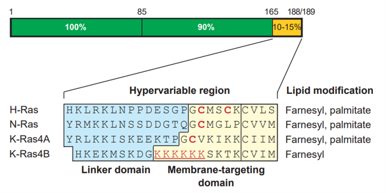

Overview
P-loop
The G1 or P-loop binds and correctly positions the alpha and beta phosphates of the nucleotides.Switch I
Switch I connects magnesium binding sub-sites and the gamma-phosphate (if GTP present). Of key importance is T35, which makes important bonds to the GTP ϒ-phosphate when H-Ras in its active form.Switch II
Switch II contains consensus amino acids that characterise GTP binding sites in many proteins. G60 (like T35 from Switch I) is bonded to the GTP ϒ-phosphate when H-Ras is in its active form.G4 and G5 loops
These regions are important for recognition of the non-phosphate parts of the guanine. The NKXD and SAX motifs of G4 and G5 ensure high specificity for GTPHVR
The C-terminal HVR of H-Ras has specific combinations of post-translational lipid modifications and membrane interacting polybasic motifs that specify differential trafficking and localisation.
Alpha helices
Ras proteins contain 5 helices, involved in stabilising the loops for their interactions. The residues spanned by the helices are the following:- α1 helix: S17-Q26. This helix is a completely normal I+4 helix with angles between residues of 100°. Contains a very low B-factor1, characteristic of ordered regions which are not exposed to the solvent, so they do not participate in interactions2.
- α2 helix: A66–R73. At its N-terminus, the helix has a small region of the less common 310 -helical structure, where instead of 4 amino acids per turn, there are 3. These helices are generally shorter and more unstable than normal i+4 helices3, explaining why this structure is smaller than the other helices.
- α3 helix: K88–R105. Is involved in interactions with switch II
- α4 helix: T127–S136. Normal helix.
- α5 helix: V152-I164. At its C-terminus, this helix contains a small 310- helical structure.
Beta strands
H-Ras consists of 6 beta strands: five parallel strands and one anti-parallel strand (β2 is anti-parallel)β1 is adjacent to β4. The β1/β4 interface divides the Ras domain into two lobes:
- Lobe 1 – N-terminal half of the Ras domain. Includes the β1-β3 strands, the P-loop and the two switches
- Lobe 2 - Includes the β4-β6 strands and the α3-α5 helices.
References
- Raimondi, F. et al. (2011) ‘Nucleotide binding switches the information flow in RAS GTPases’, PLoS Computational Biology. doi: 10.1371/journal.pcbi.1001098. https://journals.plos.org/ploscompbiol/article?id=10.1371/journal.pcbi.1001098#pcbi.1001098-Oldham1
- “Refined crystal structure of the triphosphate conformation of H-Ras p21 at 1.35 A resolution: implications for the mechanism of GTP hydrolysis” (1990) https://www.ncbi.nlm.nih.gov/pmc/articles/PMC552258/:
- “How large B-factors can be in protein crystal structures” (2018) https://bmcbioinformatics.biomedcentral.com/articles/10.1186/s12859-018-2083-8
- “310 helices in channels and other membrane proteins” (2010) https://doi.org/10.1085/jgp.201010508